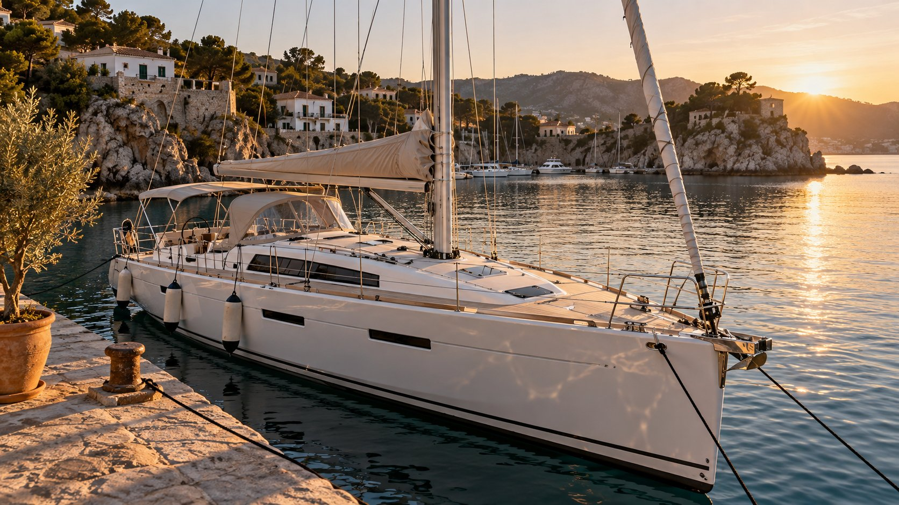

ADVENTURE HORIZONS / SECOND SHORE / ARTICLE 02
Как же оставить себе море?

«Мистер Фикс, есть ли у вас план?»
Надо начать, пожалуй, не с яхт. И даже не с лизинга.
Когда-то мы с женой приняли общее решение: мы уедем к морю. Не на две недели в отпуск, не на один сезон, а жить. И это решение никуда не исчезло. Мы и сейчас часто говорим друг другу: «А вот когда мы уедем, тогда…» Не «если» - «когда».
Удивительная штука — это «когда». В нём уже давно есть море, солнце, наш дом и какой-то совершенно другой ритм жизни. Мы оба понимаем, о чём говорим. Нам даже объяснять друг другу особенно ничего не нужно.
Покупка яхт была частью этого плана. Я хотел не просто иметь две красивые лодки в Хорватии. Я хотел приблизить тот момент, когда море станет нашей повседневностью.
Вот только способ, которым я решил эту задачу, оказался весьма своеобразным.
Хватай возможность, пока она есть!
У меня есть особенность характера. Когда я вижу интересную возможность, мне хочется за неё ухватиться. Сразу. Пока есть. Пока не ушла.
Иногда это помогает. Иногда позволяет сделать то, на что другой человек так и не решится.
Но у этой особенности есть и обратная сторона: в момент, когда предложение выглядит особенно привлекательным, я могу недостаточно внимательно рассмотреть ограничения, которые к нему прилагаются.
С двумя ELAN Impression 45.1 так, в сущности, и произошло.
Я увидел шанс приобрести сразу две новые яхты, причём не выкладывая за них всю стоимость одномоментно. Чартер должен был помогать обслуживать лизинг. В схеме всё выглядело достаточно стройно.
Яхты — есть. Море — есть. Работающий чартерный оператор — есть. Значит, и к нашему с женой плану мы стали ближе.
Упс.
Сегодня мне кажется, что я тогда перепутал возможность купить яхты с возможностью свободно ими распоряжаться.
У каждого своя задача
Что такое лизинг яхты с чартерным управлением? Кидайте варианты. Накидали? Теперь взглянем с другой стороны. Это схема ведения бизнеса? Да. Возможность быстро купить актив и растянуть платежи при недостатке первоначального капитала? Тоже да. Что еще? Ну же, давайте. Догадались?
Ну конечно! В целом это — продукт. Ну, скажем, как… колбаса. Можно продать. Можно купить. Зависит от того, кто покупает и кто продаёт. На рынке всегда два субъекта. И один пользуется другим — и покупатель, и продавец. Но цели покупки и продажи могут быть… немного разными.
Что такое чартерная компания? Что она продаёт? Правильно — услугу. И чем больше услуг она продаст, тем больше заработает. Её бизнес — чартерный флот. Чем больше лодок работает в управляемой ею системе, тем больше возможностей для коммерческой эксплуатации, продаж и связанных услуг. То есть предложение лизинговой схемы — это способ увеличивать этот флот. И продажу услуг.
Для меня же яхты были частью будущей жизни у моря.
На словах эти цели прекрасно сочетались. На практике — далеко не во всём.
Меня никто не обманывал. Со мной были абсолютно честны. Мне никто не обещал того, чего не было в договорах. За свои решения отвечаю только я сам. Договоры подписывал я, и разобраться в их последствиях тоже должен был я. Ещё на берегу.
Мне продали прежде всего привлекательную возможность войти в яхтинг как владелец. А вот ограничения такого владения я осознал намного позже.
У чартерного оператора не было особенной причины заботиться о том, насколько удобна эта конструкция для моего будущего переезда в Испанию, смены режима эксплуатации или самостоятельной работы в море. У него была своя задача. И он её решал.
Я же по привычке — или от большой наивности — думал, что наши задачи почти совпадают.
Лодка есть. А свобода — где?
Самое неприятное открытие я сделал вовсе не тогда, когда начал считать убытки. Деньги — важный вопрос, но, как выяснилось, не единственный.
Я стал всерьёз изучать, что нужно сделать, если я захочу вывести одну яхту из действующей чартерной системы и использовать её самостоятельно. Например, перевести базирование в Испанию, изменить режим эксплуатации, организовать собственные морские переходы и практические занятия.
И обнаружил, что это не задача из серии «заправился, отдал швартовы и пошёл».
Обе яхты зарегистрированы в Хорватии как коммерческие суда. В имеющихся судовых документах указан район плавания III. А если мне нужен другой район, другая модель эксплуатации, другие переходы и другие требования к безопасности — всё это придётся оформлять и подтверждать отдельно.
Любопытно, что часть чартерного флота, насколько мне известно, имеет район плавания I. Значит, более широкая зона плавания для коммерческого судна в принципе возможна — при выполнении соответствующих требований. Но для продажи мне продукта «лизинг + управление чартером» такая задача просто не стояла. Или её не поставил я — и вот это вероятнее всего.
И вот ещё одна тонкость. Я привык говорить «мои яхты». В человеческом смысле они действительно мои: я вложил средства и несу экономические последствия. Но до выкупа юридическая конструкция иная: собственником по документам выступает лизинговая компания, а договоры связаны с хорватским юридическим лицом.
Захотел перевести судно на физическое лицо? Сменить флаг? Изменить страну регистрации и режим коммерческого использования? Тут могут возникнуть вопросы НДС, правопреемства, согласия лизингодателя, страхования, регистрации и требований новой юрисдикции.
Не утверждаю, что всё это невозможно. Наоборот: мы как раз ищем законный маршрут. Но это уже юридический и финансовый проект, а не простая формальность.
И самое удивительное: по-настоящему задумываться об этих вещах я начал только примерно полтора-два года назад. Не при заключении лизинга, когда нужно было. А значительно позже. Как это там, в известном мультике: «Шарик, ты — балбес!»
Вот где была настоящая ловушка.
Я приобрёл яхты как средство приблизиться к свободе — и оказался привязан к условиям, которые были удобны прежде всего для чужой модели работы.
Продать обе? Нет, это не совсем мой ответ
Теперь, когда прежняя конструкция себя практически исчерпала, самое простое решение — всё продать.
Свести баланс. Закрыть договоры. Перелистнуть страницу.
Но проблема в том, что я не собирался отказываться от нашего плана уехать к морю. Мы по-прежнему хотим этого. И море для меня — не красивый фон за окном.
Я хочу на нём работать. Сам. Без постоянного посредника между мной и собственной яхтой, без чужих решений о том, какой она должна быть и где ей положено ходить.
Так постепенно возникла другая идея: не спасать любой ценой обе лодки и не пытаться повторить прежний чартер в новом месте, а продать одну, высвободившиеся средства направить на решение обязательств и восстановление второй.
Не две компромиссные лодки внутри чужой системы. Одна — но действительно подготовленная, понятная мне технически и предназначенная для моей собственной работы. И не только. В будущем я тоже не исключаю расширения флота. Возможно, даже стану брать чужие яхты в управление. Но это не задача первого этапа. К такой перспективе я буду подходить уже с борта собственной лодки — и с опытом человека, который сам сдавал судно в управление. Чего-чего, а этого я откушал очень полной ложкой. И мои вопросы к владельцам других лодок будут осознанными.
Разумеется, продажа одной яхты не гарантирует, что денег хватит на всё. Цена продажи, расчёты с лизингодателем, налоги, переоформление и стоимость рефита ещё должны сойтись. Именно поэтому я говорю о плане, а не о завершённой операции.
Но хотя бы цель теперь сформулирована правильно.
Почему EVA?
Если говорить о том, какую лодку хотелось бы сохранить, почему-то первой приходит в голову EVA.
Не могу объяснить.
Обе яхты одной модели, одного года постройки. Обе имеют собственную историю и собственные технические проблемы. По-хорошему решение нужно принимать после обследования и сравнения цифр.
И тем не менее душа лежит именно к EVA.
Наверное, в жизни не всё обязано иметь безупречное экономическое объяснение. Но у меня уже был опыт, когда эмоции уверенно вели впереди расчётов. Поэтому теперь им отведено почётное, но не руководящее место.
Хочется оставить EVA. А получится ли — покажут реальные условия продажи, выкупа и техническая диагностика.
Не просто ремонт. Другая лодка по отношению к владельцу
Мне совершенно не нужна яхта, которую кое-как подготовили к очередному чартерному сезону и передали следующему клиенту.
Если я сохраняю одну лодку, то хочу довести её до уровня, на который смогу рассчитывать в море. До состояния, когда известен ресурс ключевых узлов, документально подтверждены необходимые работы, а оборудование выбрано под реальные переходы, а не под минимальные требования сдачи в чартер.
Я понимаю, что выражение «по высшему классу» звучит дорого. Оно и будет недешёвым. Но для меня это не мрамор, не дорогая обивка и не бессмысленное украшательство.
Это надёжность двигателя, SailDrive, рулевого управления, такелажа, электросистемы, корпуса и оборудования безопасности. Независимая диагностика. Контроль работ. И возможность в любой момент понять, что сделано, кем, как и почему.
Предварительный бюджет рефита EVA — порядка 20–30 тысяч евро. Это пока не договорная цена и не гарантия. Объём зависит от реального состояния судна после обследования.
И здесь тоже многое предстоит переосмыслить. Раньше я платил за поддержание лодки в чартерной эксплуатации. Теперь хочу вкладывать в судно, за которое сам буду отвечать на каждом этапе.
Главная разница — не в сумме. В том, кто определяет цель работ и принимает решения.
Бизнесмен. Моё ли это?
Есть ещё одна вещь, в которой я должен признаться.
Я не считаю себя хорошим бизнесменом.
Но я умею преподавать.
И, пожалуй, именно здесь чувствую себя на своём месте. Мне нравится не просто сообщать человеку факты, а добиться момента, когда он действительно понял сложную вещь. Когда перестал повторять за инструктором и начал мыслить самостоятельно.
Виталий Елагин, чью оценку я очень ценю, не раз говорил мне, что я прирождённый инструктор. По его словам, у меня получается объяснять сложнейшие вещи так, что они становятся понятными даже ребёнку.
Я вспоминаю эти слова не для того, чтобы повесить себе медаль. А потому, что в них, возможно, и находится ответ на вопрос о дальнейшей жизни у моря.
На первом этапе мне не нужно становиться второй чартерной компанией.
Я хочу использовать то, что умею делать сам. Передавать знания. Учить понимать море, судно и ответственность шкипера. Работать с людьми непосредственно на борту.
Права нужны. Это бесспорно. Но мой интерес — к тому, что происходит после получения прав: к реальному умению выйти, пройти маршрут и вернуться.
Для того, чтобы выйти в море — нужны права. Для того, чтобы вернуться — нужны знания.
Пожалуй, именно из этой мысли и должно вырасти дело, которым я хочу заниматься.
Испания — не просто новая точка на карте
И тут наш с женой старый разговор «а вот когда мы уедем…» неожиданно перестал быть чистой мечтой.
У нас есть дом в Испании. Есть опыт жизни и решения вопросов в этой стране. Есть определённые финансовые возможности. Есть яхты, одна из которых, возможно, станет основой следующего этапа.
Раньше все эти обстоятельства существовали словно порознь. Дом — отдельно. Яхты — отдельно. Планы переезда — отдельно. Чартерная компания — отдельно.
Теперь я пытаюсь соединить их в одну конструкцию.
Но снова наступать на прежние грабли не хочется. Поэтому на этот раз, прежде чем принимать окончательные решения, нужно проверить всё: допустимый район плавания, статус яхты, налоги, регистрацию, требования к самостоятельной профессиональной деятельности, квалификации и страхованию.
Испания привлекает меня не потому, что там можно красивее сфотографировать яхту на закате. А потому, что она потенциально может стать местом, где наши семейные планы и моя работа в море наконец соединятся.
Потенциально — важное слово. Не всё проверено, и не всё ещё зависит только от моего желания. Испания — не самая простая страна. Я уже порядка пяти лет плотно общаюсь с испанскими юристами — не по яхтенному бизнесу, по другим вопросам, абсолютно не связанным с морем. Некоторые вещи меня, прямо сказать, поражают, некоторые — наоборот. Но мне нравится эта страна со всеми её недостатками. А где их нет?
Я там жил, и жил подолгу — не пару недель туристом. А именно жил. Ходил в магазины, аптеки, в муниципалитет, общался с коммунальными компаниями. Даже кидался апельсинами в собаку, оставленную в одиночестве безалаберными соседями на три дня на их патио-балконе, которая выла так, что гоголевские черти лопались от зависти. Общался с чиновниками, соседями, полицией, с испано-румынскими цыганами на рынке — в общем, просто жил. Нравилось.
И всё-таки: как же оставить себе море?
Вот, собственно, к чему я пришёл.
Раньше я искал способ быстрее обзавестись яхтами. Сегодня ищу способ самостоятельно распоряжаться своей морской жизнью.
Возможно, для этого придётся продать DIANA. Возможно, условия вынудят принять другое решение. Возможно, после выкупа и обследования EVA окажется сложнее или дороже, чем я рассчитываю.
Я не хочу делать вид, будто будущее уже известно.
Но я знаю, чего хочу.
Мы с женой по-прежнему собираемся уехать к морю. Я хочу сохранить одну хорошую яхту, серьёзно подготовить её к самостоятельной эксплуатации и работать на ней сам — преподавать, ходить в море, передавать опыт и отвечать за результат собственными решениями.
Выйти из-под чужой опеки. Перестать быть владельцем, которому присылают отчёты, счета и объяснения. Стать человеком, который сам знает свою лодку, сам определяет маршрут и сам отвечает за то, как она подготовлена.
Для кого-то это, наверное, звучит как очередная рискованная затея.
Не исключаю.
Но теперь я хотя бы понимаю, где именно проходит граница между моей мечтой и чужим бизнесом.
И если удастся правильно продать одну яхту, выкупить и восстановить другую, решить юридические вопросы и соединить всё это с нашей жизнью в Испании, тогда получится не просто новая финансовая схема.
Получится то, ради чего всё когда-то затевалось.
Как же оставить себе море?
Похоже, ответ заключается не в количестве лодок.
А в том, чтобы наконец сделать одну из них по-настоящему своей.
Следующая статья — ARTICLE 03: THE BUYOUT. Как выйти из лизинговой конструкции и получить юридическую и практическую свободу распоряжаться яхтой.
ADVENTURE HORIZONS · SECOND SHORE · Октябрь 2026 года